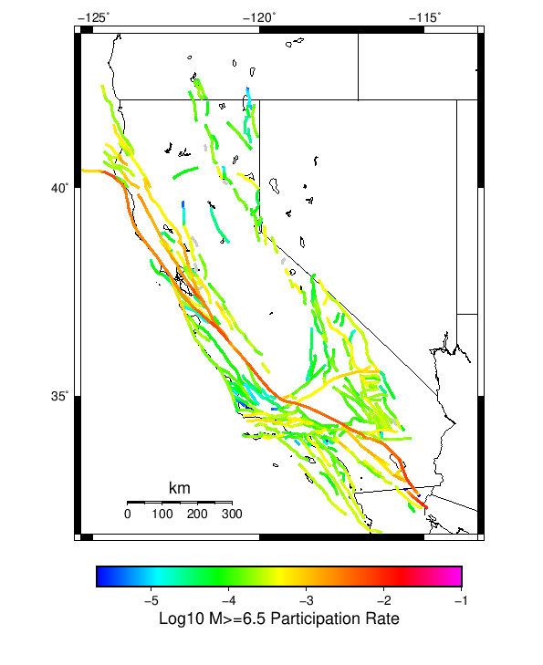
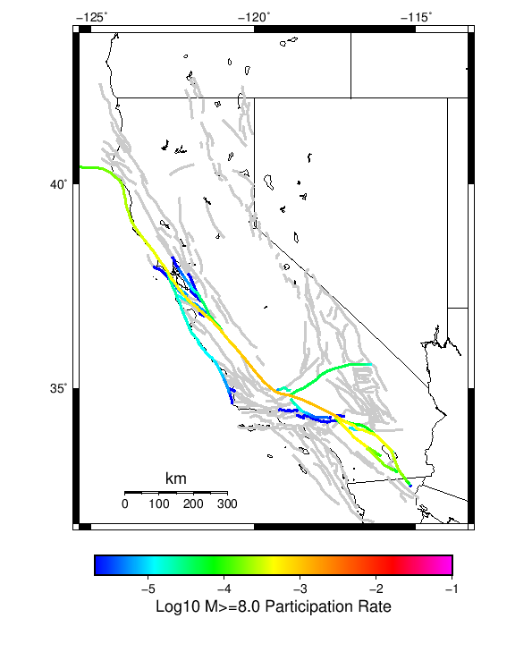

Start 1919, 500 yr, Scale Factor 1.0, Spontaneous, Historical Catalog Results
| Start 1919, 500 yr, Scale Factor 1.0, Spontaneous, Historical Catalog |
|---|
| Num Simulations | 1000 |
| Start Time | 1919/01/01 00:00:00 UTC |
| Start Time Epoch Milliseconds | -1609459200000 |
| Duration | 500 Years |
| Includes Spontaneous? | true |
| Trigger Ruptures | (none) |
| Historical Ruptures | 165 Trigger Ruptures |
| First: M7.3 at 1852/01/05 04:40:39 UTC |
| Last: M6.5 at 1918/07/15 00:24:39 UTC |
| Largest: M7.9 at 1857/01/09 16:25:39 UTC |
| Config Generated With | u3etas_config_builder.sh --start-year 1919 --num-simulations 1000 --duration-years 500 --include-spontaneous --historical-catalog --scale-factor 1.0 --hpc-site USC_HPC --nodes 36 --hours 24 --queue scec |
Table Of Contents
Magnitude Frequency Distribution
(top)
Legend
- Mean (thick black line): mean annual rate across all 1000 catalogs
- 2.5%,97.5% (thin black lines): annual rate percentiles across all 1000 catalogs
- Median (thin blue line): median annual rate across all 1000 catalogs
- Mode (thin cyan line): modal annual rate across all 1000 catalogs (scaled to annualized value)
- 500 yr Probability (thin red line): 500 year probability calculated as the fraction of catalogs with at least 1 occurrence
- 500 yr Supraseismogenic Probability (thin dashed red line): same as above, but only for supraseismogenic ruptures on explicitly modeled UCERF3 faults
- 95% Conf (light red shaded region): binomial 95% confidence bounds on probability
| Mag | Mean | 2.5 %ile | 97.5 %ile | Median | Mode | 500 yr Probability | 500 yr Supra-Seis Prob |
|---|
| M≥5 | 6.818 | 6.210 | 7.532 | 6.814 | 6.942 | 1.000 (100.00%) | 1.000 (100.00%) |
| M≥5.1 | 5.394 | 4.894 | 5.958 | 5.388 | 5.482 | 1.000 (100.00%) | 1.000 (100.00%) |
| M≥5.2 | 4.261 | 3.838 | 4.728 | 4.256 | 4.302 | 1.000 (100.00%) | 1.000 (100.00%) |
| M≥5.3 | 3.361 | 3.010 | 3.748 | 3.366 | 3.190 | 1.000 (100.00%) | 1.000 (100.00%) |
| M≥5.4 | 2.646 | 2.366 | 2.952 | 2.642 | 2.562 | 1.000 (100.00%) | 1.000 (100.00%) |
| M≥5.5 | 2.078 | 1.852 | 2.326 | 2.072 | 2.066 | 1.000 (100.00%) | 1.000 (100.00%) |
| M≥5.6 | 1.627 | 1.434 | 1.830 | 1.624 | 1.630 | 1.000 (100.00%) | 1.000 (100.00%) |
| M≥5.7 | 1.269 | 1.116 | 1.426 | 1.264 | 1.228 | 1.000 (100.00%) | 1.000 (100.00%) |
| M≥5.8 | 0.984 | 0.866 | 1.114 | 0.980 | 0.998 | 1.000 (100.00%) | 1.000 (100.00%) |
| M≥5.9 | 0.749 | 0.650 | 0.854 | 0.746 | 0.742 | 1.000 (100.00%) | 1.000 (100.00%) |
| M≥6 | 0.592 | 0.506 | 0.684 | 0.590 | 0.584 | 1.000 (100.00%) | 1.000 (100.00%) |
| M≥6.1 | 0.455 | 0.386 | 0.532 | 0.452 | 0.452 | 1.000 (100.00%) | 1.000 (100.00%) |
| M≥6.2 | 0.358 | 0.302 | 0.422 | 0.356 | 0.360 | 1.000 (100.00%) | 1.000 (100.00%) |
| M≥6.3 | 0.282 | 0.236 | 0.336 | 0.280 | 0.288 | 1.000 (100.00%) | 1.000 (100.00%) |
| M≥6.4 | 0.219 | 0.180 | 0.264 | 0.218 | 0.218 | 1.000 (100.00%) | 1.000 (100.00%) |
| M≥6.5 | 0.169 | 0.134 | 0.208 | 0.168 | 0.170 | 1.000 (100.00%) | 1.000 (100.00%) |
| M≥6.6 | 0.131 | 0.100 | 0.164 | 0.130 | 0.130 | 1.000 (100.00%) | 1.000 (100.00%) |
| M≥6.7 | 0.100 | 0.076 | 0.128 | 0.100 | 0.100 | 1.000 (100.00%) | 1.000 (100.00%) |
| M≥6.8 | 0.079 | 0.058 | 0.102 | 0.080 | 0.084 | 1.000 (100.00%) | 1.000 (100.00%) |
| M≥6.9 | 0.061 | 0.042 | 0.080 | 0.062 | 0.064 | 1.000 (100.00%) | 1.000 (100.00%) |
| M≥7 | 0.047 | 0.032 | 0.066 | 0.048 | 0.048 | 1.000 (100.00%) | 1.000 (100.00%) |
| M≥7.1 | 0.036 | 0.022 | 0.052 | 0.036 | 0.036 | 1.000 (100.00%) | 1.000 (100.00%) |
| M≥7.2 | 0.027 | 0.016 | 0.040 | 0.026 | 0.024 | 1.000 (100.00%) | 1.000 (100.00%) |
| M≥7.3 | 0.021 | 0.012 | 0.032 | 0.022 | 0.020 | 1.000 (100.00%) | 1.000 (100.00%) |
| M≥7.4 | 0.016 | 8.00E-3 | 0.026 | 0.016 | 0.014 | 1.000 (100.00%) | 1.000 (100.00%) |
| M≥7.5 | 0.012 | 6.00E-3 | 0.020 | 0.012 | 0.010 | 1.000 (100.00%) | 1.000 (100.00%) |
| M≥7.6 | 8.80E-3 | 4.00E-3 | 0.016 | 8.00E-3 | 8.00E-3 | 1.000 (100.00%) | 1.000 (100.00%) |
| M≥7.7 | 6.18E-3 | 2.00E-3 | 0.010 | 6.00E-3 | 6.00E-3 | 0.997 (99.70%) | 0.997 (99.70%) |
| M≥7.8 | 4.28E-3 | 2.00E-3 | 8.00E-3 | 4.00E-3 | 4.00E-3 | 0.977 (97.70%) | 0.977 (97.70%) |
| M≥7.9 | 2.34E-3 | 0.000 | 6.00E-3 | 2.00E-3 | 2.00E-3 | 0.788 (78.80%) | 0.788 (78.80%) |
| M≥8 | 1.26E-3 | 0.000 | 4.00E-3 | 2.00E-3 | 0.000 | 0.525 (52.50%) | 0.525 (52.50%) |
| M≥8.1 | 5.98E-4 | 0.000 | 2.00E-3 | 0.000 | 0.000 | 0.281 (28.10%) | 0.281 (28.10%) |
| M≥8.2 | 2.62E-4 | 0.000 | 2.00E-3 | 0.000 | 0.000 | 0.130 (13.00%) | 0.130 (13.00%) |
| M≥8.3 | 6.80E-5 | 0.000 | 2.00E-3 | 0.000 | 0.000 | 0.034 (3.40%) | 0.034 (3.40%) |
| M≥8.4 | 0.000 | 0.000 | 0.000 | 0.000 | 0.000 | 0.000 (0.00%) | 0.000 (0.00%) |
| M≥8.5 | 0.000 | 0.000 | 0.000 | 0.000 | 0.000 | 0.000 (0.00%) | 0.000 (0.00%) |
| M≥8.6 | 0.000 | 0.000 | 0.000 | 0.000 | 0.000 | 0.000 (0.00%) | 0.000 (0.00%) |
| M≥8.7 | 0.000 | 0.000 | 0.000 | 0.000 | 0.000 | 0.000 (0.00%) | 0.000 (0.00%) |
| M≥8.8 | 0.000 | 0.000 | 0.000 | 0.000 | 0.000 | 0.000 (0.00%) | 0.000 (0.00%) |
| M≥8.9 | 0.000 | 0.000 | 0.000 | 0.000 | 0.000 | 0.000 (0.00%) | 0.000 (0.00%) |
| M≥9 | 0.000 | 0.000 | 0.000 | 0.000 | 0.000 | 0.000 (0.00%) | 0.000 (0.00%) |
Long Term Rate Variability
(top)
162 Year Variability
(top)
Download CSV Here
| Magnitude | Mean | Median | Mode | Std. Dev. | 2.5 %-ile | 16 %-ile | 84 %-ile | 97.5 %-ile |
|---|
| 5.0 | 6.8151503 | 6.771605 | 6.7530866 | 0.65879864 | 5.6358023 | 6.154321 | 7.4506173 | 8.209877 |
| 5.1 | 5.391644 | 5.3641977 | 5.432099 | 0.530331 | 4.4444447 | 4.8580246 | 5.9074073 | 6.512346 |
| 5.2 | 4.2594895 | 4.234568 | 4.148148 | 0.4262345 | 3.4814816 | 3.8395061 | 4.6790123 | 5.1790123 |
| 5.3 | 3.3598127 | 3.345679 | 3.2777777 | 0.3448333 | 2.7345679 | 3.0185184 | 3.6975307 | 4.1049385 |
| 5.4 | 2.6448045 | 2.6296296 | 2.5987654 | 0.278465 | 2.1419754 | 2.3703704 | 2.9135802 | 3.2407408 |
| 5.5 | 2.0775905 | 2.0679011 | 2.0246913 | 0.2249118 | 1.6728395 | 1.8580247 | 2.3024693 | 2.5555556 |
| 5.6 | 1.6265227 | 1.6172839 | 1.5555556 | 0.18316506 | 1.2962962 | 1.4444444 | 1.808642 | 2.006173 |
| 5.7 | 1.2690103 | 1.2592592 | 1.2345679 | 0.14798181 | 1.0 | 1.1234568 | 1.4197531 | 1.574074 |
| 5.8 | 0.9837675 | 0.9814815 | 0.9876543 | 0.1192537 | 0.77160496 | 0.86419755 | 1.0987654 | 1.2345679 |
| 5.9 | 0.7485432 | 0.74691355 | 0.72839504 | 0.09644411 | 0.5740741 | 0.654321 | 0.83950615 | 0.9506173 |
| 6.0 | 0.5920782 | 0.58641976 | 0.5925926 | 0.08033285 | 0.44444445 | 0.5123457 | 0.6728395 | 0.7592593 |
| 6.1 | 0.4548251 | 0.45061728 | 0.44444445 | 0.066719785 | 0.33333334 | 0.3888889 | 0.5185185 | 0.59876543 |
| 6.2 | 0.35773867 | 0.35185185 | 0.34567901 | 0.055954527 | 0.25308642 | 0.30246913 | 0.41358024 | 0.47530866 |
| 6.3 | 0.28162962 | 0.2777778 | 0.27160493 | 0.047749445 | 0.19753087 | 0.2345679 | 0.3271605 | 0.38271606 |
| 6.4 | 0.21920371 | 0.21604939 | 0.20987654 | 0.04050761 | 0.14197531 | 0.17901234 | 0.25925925 | 0.30246913 |
| 6.5 | 0.16860288 | 0.16666667 | 0.17283951 | 0.03451589 | 0.10493827 | 0.13580246 | 0.2037037 | 0.24074075 |
| 6.6 | 0.13059877 | 0.12962963 | 0.12345679 | 0.029514505 | 0.074074075 | 0.09876543 | 0.16049382 | 0.19135803 |
| 6.7 | 0.100115225 | 0.09876543 | 0.09259259 | 0.02476087 | 0.055555556 | 0.074074075 | 0.12345679 | 0.15432099 |
| 6.8 | 0.078788064 | 0.08024691 | 0.08024691 | 0.021743776 | 0.037037037 | 0.055555556 | 0.09876543 | 0.12345679 |
| 6.9 | 0.060971193 | 0.061728396 | 0.061728396 | 0.018914238 | 0.024691358 | 0.043209877 | 0.08024691 | 0.09876543 |
| 7.0 | 0.047393005 | 0.043209877 | 0.043209877 | 0.016683655 | 0.018518519 | 0.030864198 | 0.061728396 | 0.086419754 |
| 7.1 | 0.035942387 | 0.037037037 | 0.037037037 | 0.014359016 | 0.012345679 | 0.024691358 | 0.049382716 | 0.06790123 |
| 7.2 | 0.02710288 | 0.024691358 | 0.024691358 | 0.01221435 | 0.0061728396 | 0.012345679 | 0.037037037 | 0.055555556 |
| 7.3 | 0.021279836 | 0.018518519 | 0.018518519 | 0.01056897 | 0.0061728396 | 0.012345679 | 0.030864198 | 0.043209877 |
| 7.4 | 0.016286008 | 0.018518519 | 0.012345679 | 0.009142463 | 0.0 | 0.0061728396 | 0.024691358 | 0.037037037 |
| 7.5 | 0.01168107 | 0.012345679 | 0.012345679 | 0.0076185167 | 0.0 | 0.0061728396 | 0.018518519 | 0.030864198 |
| 7.6 | 0.008777778 | 0.0061728396 | 0.0061728396 | 0.006449401 | 0.0 | 0.0 | 0.012345679 | 0.024691358 |
| 7.7 | 0.006131687 | 0.0061728396 | 0.0061728396 | 0.005301225 | 0.0 | 0.0 | 0.012345679 | 0.018518519 |
| 7.8 | 0.0042386833 | 0.0061728396 | 0.0061728396 | 0.004303245 | 0.0 | 0.0 | 0.0061728396 | 0.012345679 |
| 7.9 | 0.0023209876 | 0.0 | 0.0 | 0.003286045 | 0.0 | 0.0 | 0.0061728396 | 0.0061728396 |
| 8.0 | 0.0012489712 | 0.0 | 0.0 | 0.0025460096 | 0.0 | 0.0 | 0.0061728396 | 0.0061728396 |
| 8.1 | 5.9876544E-4 | 0.0 | 0.0 | 0.0018272044 | 0.0 | 0.0 | 0.0 | 0.0061728396 |
| 8.2 | 2.5925925E-4 | 0.0 | 0.0 | 0.001238411 | 0.0 | 0.0 | 0.0 | 0.0061728396 |
| 8.3 | 6.584362E-5 | 0.0 | 0.0 | 6.3422456E-4 | 0.0 | 0.0 | 0.0 | 0.0 |
| 8.4 | 0.0 | 0.0 | 0.0 | 0.0 | 0.0 | 0.0 | 0.0 | 0.0 |
| 8.5 | 0.0 | 0.0 | 0.0 | 0.0 | 0.0 | 0.0 | 0.0 | 0.0 |
| 8.6 | 0.0 | 0.0 | 0.0 | 0.0 | 0.0 | 0.0 | 0.0 | 0.0 |
| 8.7 | 0.0 | 0.0 | 0.0 | 0.0 | 0.0 | 0.0 | 0.0 | 0.0 |
| 8.8 | 0.0 | 0.0 | 0.0 | 0.0 | 0.0 | 0.0 | 0.0 | 0.0 |
| 8.9 | 0.0 | 0.0 | 0.0 | 0.0 | 0.0 | 0.0 | 0.0 | 0.0 |
| 9.0 | 0.0 | 0.0 | 0.0 | 0.0 | 0.0 | 0.0 | 0.0 | 0.0 |
80 Year Variability
(top)

Download CSV Here
| Magnitude | Mean | Median | Mode | Std. Dev. | 2.5 %-ile | 16 %-ile | 84 %-ile | 97.5 %-ile |
|---|
| 5.0 | 6.814321 | 6.725 | 6.5125 | 0.9823085 | 5.175 | 5.85 | 7.775 | 8.9875 |
| 5.1 | 5.390815 | 5.3125 | 4.925 | 0.7885665 | 4.075 | 4.6125 | 6.1625 | 7.1625 |
| 5.2 | 4.258875 | 4.2 | 3.9375 | 0.63302743 | 3.1875 | 3.6375 | 4.8875 | 5.6375 |
| 5.3 | 3.359473 | 3.3125 | 3.1375 | 0.5110346 | 2.4875 | 2.8625 | 3.875 | 4.475 |
| 5.4 | 2.6445541 | 2.6125 | 2.65 | 0.41201586 | 1.9375 | 2.2375 | 3.0625 | 3.55 |
| 5.5 | 2.0772917 | 2.05 | 2.0125 | 0.33296466 | 1.5 | 1.75 | 2.4125 | 2.8 |
| 5.6 | 1.6263 | 1.6125 | 1.5875 | 0.26967788 | 1.15 | 1.3625 | 1.8875 | 2.2 |
| 5.7 | 1.2688521 | 1.25 | 1.2875 | 0.21735543 | 0.8875 | 1.0625 | 1.475 | 1.725 |
| 5.8 | 0.9835875 | 0.975 | 0.9125 | 0.17456786 | 0.675 | 0.8125 | 1.15 | 1.35 |
| 5.9 | 0.7485292 | 0.7375 | 0.75 | 0.14101236 | 0.5 | 0.6125 | 0.8875 | 1.0625 |
| 6.0 | 0.59190625 | 0.5875 | 0.5625 | 0.11690551 | 0.3875 | 0.475 | 0.7 | 0.85 |
| 6.1 | 0.45469376 | 0.45 | 0.425 | 0.0966427 | 0.275 | 0.3625 | 0.55 | 0.6625 |
| 6.2 | 0.35764375 | 0.35 | 0.3375 | 0.081749775 | 0.2125 | 0.275 | 0.4375 | 0.5375 |
| 6.3 | 0.2814875 | 0.275 | 0.2625 | 0.069824 | 0.1625 | 0.2125 | 0.35 | 0.425 |
| 6.4 | 0.21911459 | 0.2125 | 0.2125 | 0.059385188 | 0.1125 | 0.1625 | 0.275 | 0.35 |
| 6.5 | 0.1685625 | 0.1625 | 0.15 | 0.050582808 | 0.075 | 0.1125 | 0.2125 | 0.275 |
| 6.6 | 0.130525 | 0.125 | 0.125 | 0.043237407 | 0.0625 | 0.0875 | 0.175 | 0.225 |
| 6.7 | 0.100085415 | 0.1 | 0.0875 | 0.036654823 | 0.0375 | 0.0625 | 0.1375 | 0.175 |
| 6.8 | 0.07877917 | 0.075 | 0.075 | 0.03217554 | 0.025 | 0.05 | 0.1125 | 0.15 |
| 6.9 | 0.060966667 | 0.0625 | 0.0625 | 0.0277257 | 0.0125 | 0.0375 | 0.0875 | 0.125 |
| 7.0 | 0.04736875 | 0.05 | 0.0375 | 0.024477335 | 0.0125 | 0.025 | 0.075 | 0.1 |
| 7.1 | 0.035920832 | 0.0375 | 0.025 | 0.021226164 | 0.0 | 0.0125 | 0.0625 | 0.0875 |
| 7.2 | 0.027075 | 0.025 | 0.025 | 0.018132016 | 0.0 | 0.0125 | 0.05 | 0.0625 |
| 7.3 | 0.021247916 | 0.025 | 0.0125 | 0.01576024 | 0.0 | 0.0 | 0.0375 | 0.0625 |
| 7.4 | 0.016254166 | 0.0125 | 0.0125 | 0.013574619 | 0.0 | 0.0 | 0.025 | 0.05 |
| 7.5 | 0.011658333 | 0.0125 | 0.0125 | 0.011444653 | 0.0 | 0.0 | 0.025 | 0.0375 |
| 7.6 | 0.0087583335 | 0.0125 | 0.0 | 0.009664954 | 0.0 | 0.0 | 0.0125 | 0.025 |
| 7.7 | 0.006125 | 0.0 | 0.0 | 0.008049027 | 0.0 | 0.0 | 0.0125 | 0.025 |
| 7.8 | 0.0042354167 | 0.0 | 0.0 | 0.0066427323 | 0.0 | 0.0 | 0.0125 | 0.025 |
| 7.9 | 0.00231875 | 0.0 | 0.0 | 0.0050122226 | 0.0 | 0.0 | 0.0125 | 0.0125 |
| 8.0 | 0.0012479167 | 0.0 | 0.0 | 0.0037752313 | 0.0 | 0.0 | 0.0 | 0.0125 |
| 8.1 | 5.9791666E-4 | 0.0 | 0.0 | 0.0026678906 | 0.0 | 0.0 | 0.0 | 0.0125 |
| 8.2 | 2.6041668E-4 | 0.0 | 0.0 | 0.0017854755 | 0.0 | 0.0 | 0.0 | 0.0 |
| 8.3 | 6.666667E-5 | 0.0 | 0.0 | 9.105092E-4 | 0.0 | 0.0 | 0.0 | 0.0 |
| 8.4 | 0.0 | 0.0 | 0.0 | 0.0 | 0.0 | 0.0 | 0.0 | 0.0 |
| 8.5 | 0.0 | 0.0 | 0.0 | 0.0 | 0.0 | 0.0 | 0.0 | 0.0 |
| 8.6 | 0.0 | 0.0 | 0.0 | 0.0 | 0.0 | 0.0 | 0.0 | 0.0 |
| 8.7 | 0.0 | 0.0 | 0.0 | 0.0 | 0.0 | 0.0 | 0.0 | 0.0 |
| 8.8 | 0.0 | 0.0 | 0.0 | 0.0 | 0.0 | 0.0 | 0.0 | 0.0 |
| 8.9 | 0.0 | 0.0 | 0.0 | 0.0 | 0.0 | 0.0 | 0.0 | 0.0 |
| 9.0 | 0.0 | 0.0 | 0.0 | 0.0 | 0.0 | 0.0 | 0.0 | 0.0 |
28 Year Variability
(top)

Download CSV Here
| Magnitude | Mean | Median | Mode | Std. Dev. | 2.5 %-ile | 16 %-ile | 84 %-ile | 97.5 %-ile |
|---|
| 5.0 | 6.813319 | 6.464286 | 5.964286 | 1.6911737 | 4.464286 | 5.321429 | 8.285714 | 11.107142 |
| 5.1 | 5.389689 | 5.142857 | 4.964286 | 1.3557228 | 3.4642856 | 4.178571 | 6.571429 | 8.785714 |
| 5.2 | 4.258059 | 4.071429 | 3.642857 | 1.0877829 | 2.6785715 | 3.2857144 | 5.214286 | 6.928571 |
| 5.3 | 3.3588529 | 3.2142856 | 3.0357144 | 0.87541455 | 2.0714285 | 2.5714285 | 4.142857 | 5.5 |
| 5.4 | 2.6440988 | 2.5357144 | 2.5357144 | 0.70224375 | 1.5714285 | 2.0 | 3.2857144 | 4.321429 |
| 5.5 | 2.077042 | 2.0 | 1.9285715 | 0.56699306 | 1.1785715 | 1.5357143 | 2.607143 | 3.4285715 |
| 5.6 | 1.6261177 | 1.5714285 | 1.5 | 0.45725933 | 0.89285713 | 1.2142857 | 2.0714285 | 2.7142856 |
| 5.7 | 1.2687689 | 1.2142857 | 1.1785715 | 0.3686291 | 0.6785714 | 0.9285714 | 1.6071428 | 2.142857 |
| 5.8 | 0.983521 | 0.96428573 | 0.89285713 | 0.29838985 | 0.5 | 0.71428573 | 1.25 | 1.6428572 |
| 5.9 | 0.7484517 | 0.71428573 | 0.6785714 | 0.23939511 | 0.35714287 | 0.53571427 | 0.96428573 | 1.2857143 |
| 6.0 | 0.59188026 | 0.5714286 | 0.53571427 | 0.19989261 | 0.25 | 0.39285713 | 0.78571427 | 1.0357143 |
| 6.1 | 0.45466807 | 0.42857143 | 0.39285713 | 0.16687065 | 0.17857143 | 0.2857143 | 0.60714287 | 0.8214286 |
| 6.2 | 0.35765126 | 0.35714287 | 0.2857143 | 0.14162819 | 0.10714286 | 0.21428572 | 0.5 | 0.6785714 |
| 6.3 | 0.2815105 | 0.2857143 | 0.25 | 0.12104579 | 0.071428575 | 0.17857143 | 0.39285713 | 0.53571427 |
| 6.4 | 0.21911344 | 0.21428572 | 0.21428572 | 0.10342272 | 0.035714287 | 0.10714286 | 0.32142857 | 0.4642857 |
| 6.5 | 0.16860084 | 0.14285715 | 0.14285715 | 0.08855888 | 0.035714287 | 0.071428575 | 0.25 | 0.35714287 |
| 6.6 | 0.13053991 | 0.10714286 | 0.10714286 | 0.07618192 | 0.0 | 0.071428575 | 0.21428572 | 0.2857143 |
| 6.7 | 0.10010714 | 0.10714286 | 0.071428575 | 0.06513593 | 0.0 | 0.035714287 | 0.17857143 | 0.25 |
| 6.8 | 0.07880462 | 0.071428575 | 0.071428575 | 0.056882557 | 0.0 | 0.035714287 | 0.14285715 | 0.21428572 |
| 6.9 | 0.060989495 | 0.035714287 | 0.035714287 | 0.04924436 | 0.0 | 0.0 | 0.10714286 | 0.17857143 |
| 7.0 | 0.047378153 | 0.035714287 | 0.035714287 | 0.04323559 | 0.0 | 0.0 | 0.071428575 | 0.14285715 |
| 7.1 | 0.035936974 | 0.035714287 | 0.0 | 0.03747592 | 0.0 | 0.0 | 0.071428575 | 0.14285715 |
| 7.2 | 0.02707773 | 0.035714287 | 0.0 | 0.03214948 | 0.0 | 0.0 | 0.071428575 | 0.10714286 |
| 7.3 | 0.021243697 | 0.0 | 0.0 | 0.028107798 | 0.0 | 0.0 | 0.035714287 | 0.10714286 |
| 7.4 | 0.016226891 | 0.0 | 0.0 | 0.024199422 | 0.0 | 0.0 | 0.035714287 | 0.071428575 |
| 7.5 | 0.01162395 | 0.0 | 0.0 | 0.0202929 | 0.0 | 0.0 | 0.035714287 | 0.071428575 |
| 7.6 | 0.008735294 | 0.0 | 0.0 | 0.01735694 | 0.0 | 0.0 | 0.035714287 | 0.035714287 |
| 7.7 | 0.006105042 | 0.0 | 0.0 | 0.014430486 | 0.0 | 0.0 | 0.035714287 | 0.035714287 |
| 7.8 | 0.0042163865 | 0.0 | 0.0 | 0.011933966 | 0.0 | 0.0 | 0.0 | 0.035714287 |
| 7.9 | 0.0022983192 | 0.0 | 0.0 | 0.00885753 | 0.0 | 0.0 | 0.0 | 0.035714287 |
| 8.0 | 0.0012352942 | 0.0 | 0.0 | 0.00653791 | 0.0 | 0.0 | 0.0 | 0.035714287 |
| 8.1 | 5.9033616E-4 | 0.0 | 0.0 | 0.004553697 | 0.0 | 0.0 | 0.0 | 0.0 |
| 8.2 | 2.5840336E-4 | 0.0 | 0.0 | 0.0030269553 | 0.0 | 0.0 | 0.0 | 0.0 |
| 8.3 | 6.302521E-5 | 0.0 | 0.0 | 0.0014990198 | 0.0 | 0.0 | 0.0 | 0.0 |
| 8.4 | 0.0 | 0.0 | 0.0 | 0.0 | 0.0 | 0.0 | 0.0 | 0.0 |
| 8.5 | 0.0 | 0.0 | 0.0 | 0.0 | 0.0 | 0.0 | 0.0 | 0.0 |
| 8.6 | 0.0 | 0.0 | 0.0 | 0.0 | 0.0 | 0.0 | 0.0 | 0.0 |
| 8.7 | 0.0 | 0.0 | 0.0 | 0.0 | 0.0 | 0.0 | 0.0 | 0.0 |
| 8.8 | 0.0 | 0.0 | 0.0 | 0.0 | 0.0 | 0.0 | 0.0 | 0.0 |
| 8.9 | 0.0 | 0.0 | 0.0 | 0.0 | 0.0 | 0.0 | 0.0 | 0.0 |
| 9.0 | 0.0 | 0.0 | 0.0 | 0.0 | 0.0 | 0.0 | 0.0 | 0.0 |
Variability Duration Dependence
(top)
Download CSV Here
| Duration (years) | Mean | Median | Mode | Std. Dev. | 2.5 %-ile | 16 %-ile | 84 %-ile | 97.5 %-ile |
|---|
| 1.0 | 6.817766 | 5.0 | 4.0 | 7.168906 | 1.0 | 3.0 | 10.0 | 22.0 |
| 4.0 | 6.817766 | 6.0 | 5.0 | 4.0265365 | 2.75 | 4.0 | 9.0 | 17.5 |
| 8.0 | 6.8165526 | 6.125 | 5.625 | 2.9868937 | 3.375 | 4.5 | 8.75 | 15.0 |
| 12.0 | 6.8147335 | 6.25 | 5.3333335 | 2.4911358 | 3.8333333 | 4.8333335 | 8.666667 | 13.583333 |
| 16.0 | 6.8165526 | 6.3125 | 5.625 | 2.1894295 | 4.0625 | 5.0 | 8.5625 | 12.6875 |
| 20.0 | 6.817766 | 6.4 | 5.8 | 1.9814765 | 4.2 | 5.1 | 8.5 | 12.0 |
| 24.0 | 6.814321 | 6.4166665 | 6.0416665 | 1.8246859 | 4.3333335 | 5.2083335 | 8.375 | 11.541667 |
| 28.0 | 6.813319 | 6.464286 | 5.964286 | 1.6911737 | 4.464286 | 5.321429 | 8.285714 | 11.107142 |
| 32.0 | 6.814321 | 6.53125 | 5.96875 | 1.586485 | 4.53125 | 5.375 | 8.25 | 10.75 |
| 36.0 | 6.8129444 | 6.5277777 | 6.25 | 1.5020521 | 4.638889 | 5.4444447 | 8.166667 | 10.527778 |
| 40.0 | 6.814321 | 6.575 | 5.9 | 1.4221029 | 4.7 | 5.475 | 8.15 | 10.3 |
| 44.0 | 6.81556 | 6.590909 | 6.1363635 | 1.3696718 | 4.7727275 | 5.5454545 | 8.090909 | 10.136364 |
| 48.0 | 6.814321 | 6.6041665 | 5.7916665 | 1.2999934 | 4.8333335 | 5.6041665 | 8.041667 | 9.916667 |
| 52.0 | 6.8129444 | 6.6153846 | 6.1923075 | 1.252645 | 4.8846154 | 5.6346154 | 8.019231 | 9.846154 |
| 56.0 | 6.807739 | 6.625 | 6.375 | 1.1964703 | 4.928571 | 5.678571 | 7.964286 | 9.607142 |
| 60.0 | 6.814321 | 6.6666665 | 6.7166667 | 1.1558087 | 5.016667 | 5.7 | 7.9333334 | 9.466666 |
| 64.0 | 6.807739 | 6.671875 | 6.078125 | 1.1156691 | 5.046875 | 5.734375 | 7.890625 | 9.375 |
| 68.0 | 6.813319 | 6.6764708 | 6.9558825 | 1.0810392 | 5.0735292 | 5.7647057 | 7.867647 | 9.279411 |
| 72.0 | 6.8042154 | 6.6666665 | 6.3194447 | 1.0576882 | 5.125 | 5.7777777 | 7.8333335 | 9.208333 |
| 76.0 | 6.810897 | 6.6842103 | 6.644737 | 1.0188969 | 5.1578946 | 5.8157897 | 7.8289475 | 9.157895 |
| 80.0 | 6.814321 | 6.725 | 6.5125 | 0.9823085 | 5.175 | 5.85 | 7.775 | 8.9875 |
| 84.0 | 6.8038573 | 6.6904764 | 6.345238 | 0.9667525 | 5.2380953 | 5.8690476 | 7.7380953 | 9.0 |
| 88.0 | 6.8069158 | 6.7045455 | 6.806818 | 0.9476465 | 5.2727275 | 5.8863635 | 7.7386365 | 8.897727 |
| 92.0 | 6.8112063 | 6.7065215 | 6.5326085 | 0.9233396 | 5.2826085 | 5.9130435 | 7.728261 | 8.815217 |
| 96.0 | 6.814321 | 6.7291665 | 6.6145835 | 0.89625865 | 5.3125 | 5.9166665 | 7.6979165 | 8.739583 |
| 100.0 | 6.817766 | 6.75 | 6.87 | 0.8755723 | 5.32 | 5.94 | 7.67 | 8.74 |
| 200.0 | 6.7958627 | 6.75 | 6.64 | 0.5883257 | 5.745 | 6.23 | 7.385 | 8.045 |
| 300.0 | 6.760627 | 6.7266665 | 6.6966667 | 0.45484754 | 5.95 | 6.3133335 | 7.2066665 | 7.7766666 |
| 400.0 | 6.7958627 | 6.7775 | 6.5325 | 0.3911166 | 6.105 | 6.3875 | 7.18 | 7.66 |
| 500.0 | 6.817766 | 6.814 | 6.942 | 0.33957863 | 6.21 | 6.472 | 7.166 | 7.532 |
Simulation Stationarity
(top)

Section Participation
(top)
Section Participation Plots
(top)
| Min Mag | Complete Catalog (including spontaneous) |
|---|
| All Supra. Seis. | |
| M≥6.5 |  |
| M≥7 | |
| M≥7.5 | |
| M≥8 |  |
Supra-Seismogenic Parent Sections Table
(top)
First 10 of 313 with matching ruptures shown
| Parent Name | Total Mean Annual Rate | Total 500 Year Prob |
|---|
| San Andreas (Parkfield) | 0.040902 | 1.0 |
| San Andreas (Creeping Section) 2011 CFM | 0.025262 | 1.0 |
| San Andreas (Mojave S) | 0.01797 | 1.0 |
| Mendocino | 0.014306 | 1.0 |
| Cerro Prieto | 0.011834 | 0.999 |
| Imperial | 0.01042 | 0.999 |
| Brawley (Seismic Zone) alt 1 | 0.009552 | 0.999 |
| Hayward (So) 2011 CFM | 0.00801 | 0.997 |
| Elsinore (Glen Ivy) rev | 0.006682 | 0.967 |
| San Andreas (Offshore) 2011 CFM | 0.00667 | 0.992 |
M≥6.5 Parent Sections Table
(top)
First 10 of 306 with matching ruptures shown
| Parent Name | Total Mean Annual Rate | Total 500 Year Prob |
|---|
| Cerro Prieto | 0.010182 | 0.999 |
| San Andreas (Creeping Section) 2011 CFM | 0.00908 | 0.998 |
| Mendocino | 0.007104 | 0.976 |
| Imperial | 0.007082 | 0.992 |
| Hayward (So) 2011 CFM | 0.006764 | 0.994 |
| Brawley (Seismic Zone) alt 1 | 0.006726 | 0.991 |
| San Andreas (Mojave S) | 0.00606 | 0.999 |
| San Andreas (Santa Cruz Mts) 2011 CFM | 0.005772 | 0.989 |
| San Andreas (San Bernardino N) | 0.005568 | 0.99 |
| San Andreas (Cholame) rev | 0.005068 | 0.998 |
M≥7 Parent Sections Table
(top)
First 10 of 273 with matching ruptures shown
| Parent Name | Total Mean Annual Rate | Total 500 Year Prob |
|---|
| San Andreas (Creeping Section) 2011 CFM | 0.005564 | 0.974 |
| San Andreas (Carrizo) rev | 0.004692 | 0.999 |
| San Andreas (Cholame) rev | 0.004682 | 0.997 |
| San Andreas (Santa Cruz Mts) 2011 CFM | 0.004474 | 0.973 |
| San Andreas (Mojave S) | 0.004274 | 0.995 |
| San Andreas (Mojave N) | 0.00397 | 0.996 |
| San Andreas (Coachella) rev | 0.003754 | 0.964 |
| San Andreas (Big Bend) | 0.003702 | 0.989 |
| San Andreas (San Bernardino N) | 0.00367 | 0.952 |
| San Andreas (Parkfield) | 0.00364 | 0.947 |
M≥7.5 Parent Sections Table
(top)
First 10 of 206 with matching ruptures shown
| Parent Name | Total Mean Annual Rate | Total 500 Year Prob |
|---|
| San Andreas (Mojave N) | 0.003872 | 0.995 |
| San Andreas (Big Bend) | 0.003568 | 0.987 |
| San Andreas (Mojave S) | 0.0034 | 0.971 |
| San Andreas (Carrizo) rev | 0.003344 | 0.974 |
| San Andreas (Cholame) rev | 0.003206 | 0.961 |
| San Andreas (North Coast) 2011 CFM | 0.002916 | 0.932 |
| San Andreas (Creeping Section) 2011 CFM | 0.002766 | 0.834 |
| San Andreas (San Bernardino N) | 0.002748 | 0.881 |
| San Andreas (Parkfield) | 0.002526 | 0.864 |
| San Andreas (Peninsula) 2011 CFM | 0.002404 | 0.864 |
M≥8 Parent Sections Table
(top)
First 10 of 65 with matching ruptures shown
| Parent Name | Total Mean Annual Rate | Total 500 Year Prob |
|---|
| San Andreas (Mojave N) | 0.00115 | 0.495 |
| San Andreas (Carrizo) rev | 0.001124 | 0.492 |
| San Andreas (Big Bend) | 0.00112 | 0.49 |
| San Andreas (Mojave S) | 0.00112 | 0.485 |
| San Andreas (Cholame) rev | 0.001114 | 0.488 |
| San Andreas (San Bernardino N) | 0.001072 | 0.464 |
| San Andreas (Parkfield) | 9.68E-4 | 0.436 |
| San Andreas (Creeping Section) 2011 CFM | 8.82E-4 | 0.395 |
| San Andreas (Santa Cruz Mts) 2011 CFM | 6.28E-4 | 0.288 |
| San Andreas (Peninsula) 2011 CFM | 5.5E-4 | 0.26 |
Gridded Nucleation
(top)
| Min Mag | Complete Catalog (including spontaneous) |
|---|
| M≥5 | |
| M≥6 | |
| M≥7 | |
(top)
{
"numSimulations": 1000,
"duration": 500.0,
"startYear": 1919,
"includeSpontaneous": true,
"randomSeed": 1567314526350,
"binaryOutput": true,
"binaryOutputFilters": [
{
"prefix": "results_complete",
"descendantsOnly": false
},
{
"prefix": "results_m5_preserve_chain",
"minMag": 5.0,
"preserveChainBelowMag": true,
"descendantsOnly": false
}
],
"forceRecalc": false,
"simulationName": "Start 1919, 500 yr, Scale Factor 1.0, Spontaneous, Historical Catalog",
"numRetries": 3,
"outputDir": "${ETAS_SIM_DIR}/2019_08_31-Start1919_500yr_ScaleFactor1p0_Spontaneous_HistoricalCatalog",
"triggerCatalog": "${ETAS_LAUNCHER}/inputs/u3_historical_catalog.txt",
"triggerCatalogSurfaceMappings": "${ETAS_LAUNCHER}/inputs/u3_historical_catalog_finite_fault_mappings.xml",
"treatTriggerCatalogAsSpontaneous": true,
"cacheDir": "${ETAS_LAUNCHER}/inputs/cache_fm3p1_ba",
"fssFile": "${ETAS_LAUNCHER}/inputs/2013_05_10-ucerf3p3-production-10runs_COMPOUND_SOL_FM3_1_SpatSeisU3_MEAN_BRANCH_AVG_SOL.zip",
"probModel": "FULL_TD",
"applySubSeisForSupraNucl": true,
"totRateScaleFactor": 1.0,
"gridSeisCorr": true,
"timeIndependentERF": false,
"griddedOnly": false,
"imposeGR": false,
"includeIndirectTriggering": true,
"gridSeisDiscr": 0.1,
"catalogCompletenessModel": "RELAXED",
"configCommand": "u3etas_config_builder.sh --start-year 1919 --num-simulations 1000 --duration-years 500 --include-spontaneous --historical-catalog --scale-factor 1.0 --hpc-site USC_HPC --nodes 36 --hours 24 --queue scec",
"configTime": 1567314526350
}